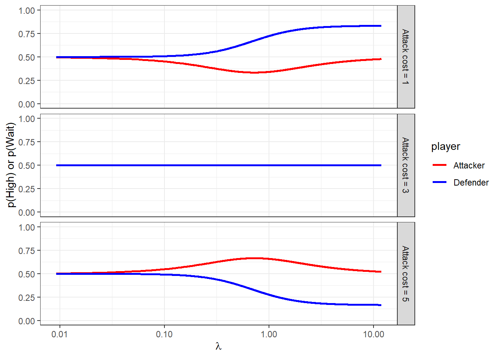
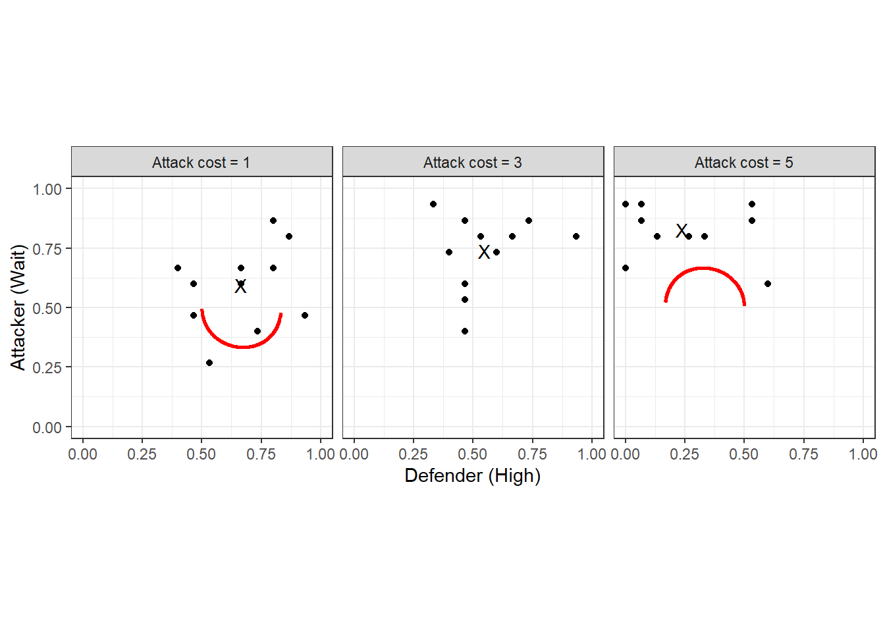
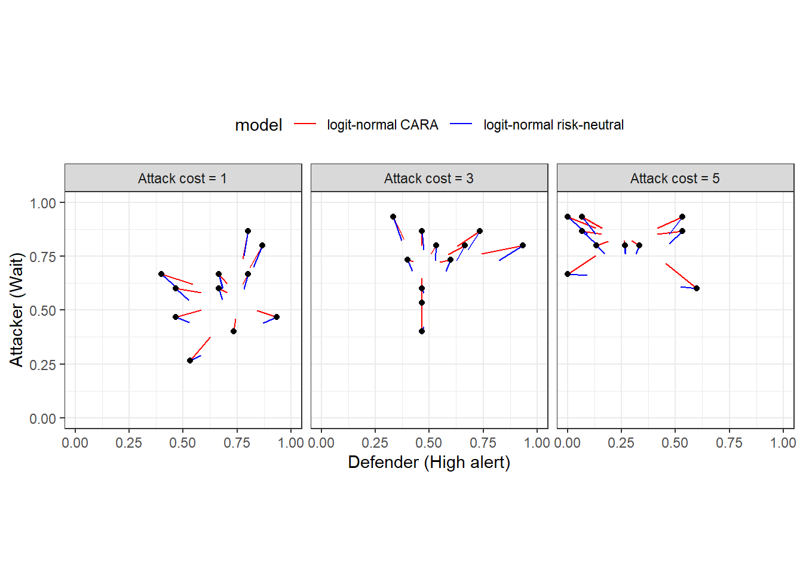
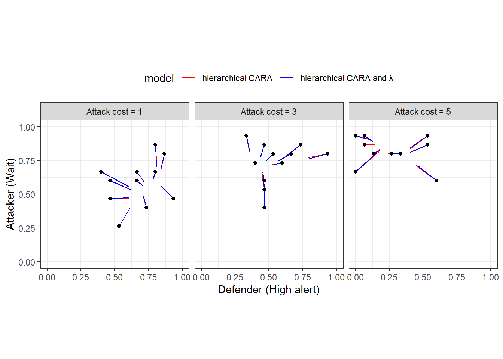
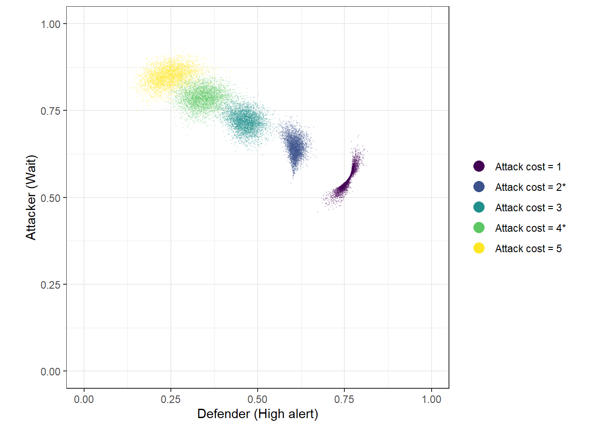

20 Application: Some more extensions to the logit quantal response equilibrium model
This chapter will introduce you to a few more variants of Quantal Response Equilibrium (QRE) models. These can be useful for adding some plausible behavioral and statistical extensions to the baseline logit QRE model. This will include extending the model with a risk-aversion parameter, which has been popular since its application in Jacob K. Goeree, Holt, and Palfrey (2003), as well as a statistical model that does not take the equilibrium condition as seriously as does the baseline QRE model. For the former, hopefully you can see that extending QRE to include any kind of behavioral parameter is fairly straightforward.
20.1 Example dataset
Holt, Sahu, and Smith (2022) investigate an attacker-defender game, and estimate some logit quantal response equilibrium models. Table 20.1 shows the payoff matrix of the game. Here \(C_A\in\{1, 3, 5\}\) is the treatment variable. The game has one Nash equilibrium, which is in mixed strategies.
TAB<-rbind(c("$1, \ 1$", "$1,\ 1-C_A$"),
c("$4,\ 1$", "$-2,\ 7-C_A$"))
rownames(TAB)<-c("High alert","Low alert")
colnames(TAB)<-c("Wait", "Attack")
TAB |>
kbl(caption = "The attacker-defender game studies in @Holt2022") |>
kable_classic(full_width=FALSE) |>
add_header_above(c("Defender", "Attacker"=2))|
Defender
|
Attacker
|
|
|---|---|---|
| Wait | Attack | |
| High alert | \(1, 1\) | \(1, 1-C_A\) |
| Low alert | \(4, 1\) | \(-2, 7-C_A\) |
Participants in Holt, Sahu, and Smith (2022) played this game in fixed pairings for one value of \(C_A\) for 30 rounds. I will follow the authors in restricting attention to the final fifteen (of thirty) rounds of play when estimating my QRE models.
20.2 Solving the QRE condition
As usual with logit QRE, we will need to construct an algorithm for solving for the equilibrium.88 Here I first tried a corrector-only algorithm at constant \(\lambda\), and it worked! So here is how you do it.
Let \(U^D\) and \(U^A\) be the defender and attacker’s payoff matrices, respectively, with \(U^A\) the transpose of how the payoffs appear in the payoff table above so that we can express a player’s expected utility vector as \(U^i\rho^{-i}\), where \(\rho^{-i}\) is the other player’s mixed strategy. Since payoff matrices are just \(2\times2\) matrices, we can write everything in payoff differences as follows:
\[ \begin{aligned} H^D&=\ell^D-\lambda^D[U^D_1-U^D_2]\begin{pmatrix}\rho^A\\ 1-\rho^A\end{pmatrix}\\ H^A&=\ell^A-\lambda^A[U^D_1-U^D_2]\begin{pmatrix}\rho^D\\ 1-\rho^D\end{pmatrix}\\ \text{where: } \ell^i&=\mathrm{logit}(\rho^i) \end{aligned} \]
Where a solution to \(H(\ell)=0\) identifies the logit QRE solution.
In order to solve this with corrector steps, we need to work out the Jacobian with respect to \(\ell\), which is:
\[ J=\begin{bmatrix} 1 & -\lambda^D[U^D_1-U^D_2]\begin{pmatrix}1 \\ -1\end{pmatrix}\rho^A(1-\rho^A)\\ -\lambda^A[U^A_1-U^A_2]\begin{pmatrix}1 \\ -1\end{pmatrix}\rho^D(1-\rho^D) & 1 \end{bmatrix} \]
We can then iterate on the sequence:
\[ \ell_{t+1}=\ell_t-J^{-1}(\ell_t)H(\ell_t) \]
My algorithm for this iterates until \(J^{-1}(\ell_t)H(\ell_t)\) is sufficiently small, and then I check that \(\max(\mathrm{abs}(H(\ell_t)))\approx 0\).
Figure 20.1 shows what the risk-neutral logit QRE correspondence looks like. Importantly here, the correspondence for \(C_A=3\) is constant at 50/50 randomization. This means that these data will not inform the model if we assume risk-neutrality. However when we assume risk-aversion, the predictions for this game differ from uniform randomization.
RNQRE<-"Code/HSS2022/RNQRE.csv" |>
read.csv()
(
ggplot(RNQRE, aes(x=lambda, y=value, color = player))
+facet_grid(cost~.)
+geom_line(linewidth=1)
+scale_x_continuous(trans="log10")
+theme_bw()
+scale_color_manual(values = c("red","blue"))
+xlab(expression(lambda))
+ylab("p(High) or p(Wait)")
+ylim(c(0,1))
)
Figure 20.1: Symmetric logit QRE correspondence as a function of \(\lambda\).
dqre<-RNQRE |>
pivot_wider(
id_cols = c(lambda, cost),
names_from = player,
values_from = value,
values_fn = function(x) x[1]
)
D<-"Data/HSS2022.xlsx" |>
read_excel(sheet = "All Data") |>
dplyr::select(
Session, Round, ID, `Other ID`, `Role (1=Defender)`, `Decision (1=High Alert,1=Wait)`,
Cost
) |>
mutate(
uid = paste(Session,ID) |> as.factor() |> as.numeric(),
HighWait = 1*(`Decision (1=High Alert,1=Wait)`==1),
treatID = (Cost-1)/2+1
) |>
rename(
Role = `Role (1=Defender)`
) |>
dplyr::select(
-`Decision (1=High Alert,1=Wait)`
) |>
rowwise() |>
mutate(
uPairIDstr = paste(Session, min(ID,`Other ID`),max(ID,`Other ID`))
) |>
ungroup() |>
mutate(
uPairID = uPairIDstr |> as.factor() |> as.numeric()
) |>
arrange(uPairID) |>
filter(Round>=16) |>
group_by(uid, uPairID, Role, Cost) |>
summarize(
p = mean(HighWait)
) |>
pivot_wider(
id_cols = c(uPairID,Cost),
names_from = Role,
values_from = p
) |>
mutate(
cost = paste("Attack cost =",Cost)
) |>
rename(
Defender = `1`, Attacker = `2`
)
dsum<-D |>
group_by(cost) |>
summarize(
Defender = mean(Defender),
Attacker = mean(Attacker)
)
(
ggplot()
+geom_path(data=dqre, aes(x=Defender, y=Attacker), linewidth=1, color="red")
+geom_point(data=D, aes(x=Defender, y=Attacker))
+geom_text(data=dsum, aes(x=Defender, y=Attacker, label = "X"))
+facet_wrap(~cost)
+coord_fixed(xlim = c(0,1), ylim = c(0,1))
+theme_bw()
+xlab("Defender (High)")+ylab("Attacker (Wait)")
)
Figure 20.2: Symmetric logit QRE locus (red curves). Black dots show individual pair mean choice frequencies, and black Xs show treatment choice frequencies.
More importantly, though, we should also look at the logit QRE locus, which is shown in Figure 20.2 (red curves). This is the set of mixed strategies that are logit QRE for any \(\lambda\). Here we can also see the individual choice frequencies (black dots), and the treatment-average choice frequencies (black Xs). In some sense, when we fit the homogeneous logit QRE model, we will be trying to find points on the red curve that are likely to have generated the black dots.
20.3 Foreshadowing what I want in my Stan programs
Before plunging in to the analysis, it is worth thinking a bit about how to organize the Stan programs that are going to estimate our models.
20.3.1 There will be a lot of repetition in the code
We will be estimating quite a few models. The important part here is the plural in “models”, and the realization that a lot of the code between the models can look exactly the same. Specifically, the data and transformed data blocks will look exactly the same for every model, and with a bit of foresight, we can also make the functions block the same in all Stan programs. Then, we can take advantage of Stan’s #include feature, where you can include code from external files.
Firstly, for the data block, we can have exactly the same code here that looks like this, which I name input_data.stan:
int nTreat; // number of treatments
vector[nTreat] CA; // cost of attacking for each treatment
int N; // number of observations
array[N] int<lower=0,upper=1> HighWait;
array[N] int<lower=1,upper=2> Role;
array[N] int<lower=1,upper=nTreat> treatment;
int nPairs;
array[N] int<lower=1,upper=nPairs> pairID;
array[nPairs] int<lower=1, upper=nTreat> pairTreatID;
vector[2] prior_lambda;
real<lower=0> prior_lambda_sd;
vector[2] prior_r;
real<lower=0> prior_r_sd;
vector[2] prior_sigma;
real<lower=0> prior_Omega;
int<lower=1> maxiter;
real<lower=0> tol;
int<lower=0, upper=1> UseData;Next, I will have a common transformed data block that looks like this, named input_transformeddata.stan:
// here I am hard-coding the payoffs that don't change
real XD, XA, CD, LD, LA, WA;
// See start of section 3
CD = 3.0;
LD = 5.0;
LA = 1.0;
WA = 5.0;
XD = 1.0;
XA = 1.0;
matrix[2,2] UD; // defender payoff matrix
array[nTreat] matrix[2,2] UA; // attacker payoff matrix, one for each treatment
UD = [[XD-CD, XD-CD],[XD, -LD]];
for (tt in 1:nTreat) {
UA[tt] = [[-XA, -LA-CA[tt]],[-XA, WA-CA[tt]]]';
}And finally, I can have the same functions block that looks like this, called input_functions.stan:
matrix CARA(
matrix X, real r
) {
return (1.0-exp(-r*X))/r;
}
vector H(real lambda_defender, real lambda_attacker,vector ell,matrix urow,matrix ucol) {
real pRow = inv_logit(ell[1]);
real pCol = inv_logit(ell[2]);
real Hrow = ell[1]-lambda_defender*(urow[1,]-urow[2,])*[pCol,1.0-pCol]';
real Hcol = ell[2]-lambda_attacker*(ucol[1,]-ucol[2,])*[pRow,1.0-pRow]';
return [Hrow, Hcol]';
}
matrix jac(real lambda_defender, real lambda_attacker,vector ell,matrix urow,matrix ucol) {
real pRow = inv_logit(ell[1]);
real pCol = inv_logit(ell[2]);
matrix[2, 2] J;
J[1,1] = 1.0;
J[2,2] = 1.0;
J[1,2] = -lambda_defender*(urow[1,]-urow[2,])*[1.0,-1.0]'*pCol*(1.0-pCol);
J[2,1] = -lambda_attacker*(ucol[1,]-ucol[2,])*[1.0,-1.0]'*pRow*(1.0-pRow);
return J;
}
Note that I am letting the H and jac functions take two \(\lambda\)s, one for the attacker, and one for the defender. This is because in one of my models I allow these to be different.
Then, we can start every Stan program like this:
functions {
#include input_functions.stan
}
data {
#include input_data.stan
}
transformed data {
#include input_transformeddata.stan
}While there will be some elements of the input_* files that are un-used in some programs, this will seriously reduce the chance of me making a mistake. Or more realistically, if there is a mistake, I will only have to fix it in one place.
20.3.2 Checking that the QRE-solver has converged
One thing we need to be wary of is that my shortcut corrector-only algorithm for solving QRE might not work. So we need a method for checking this. As such, I explicitly include a measure of convergence in Stan’s transformed parameters block. You will see this as the maxabsH transformed parameter in the programs, which measures the worst element of \(H\). I then check these once the program runs. Fortunately, these were all around \(10^{-11}\) or smaller, so I’m OK with my shortcut.
20.3.3 Model selection
Since I will be estimating several models, I will be wanting to make a statement about which one is most consistent with the data. Specifically, I will be evaluating each model with (i) its log-marginal likelihood (which lets us compute Bayes factors), and (ii) approximate LOO. Computing log-marginal likelihood using the bridgesampling library requires that we don’t drop the normalizing constants in sampling statements, so everything will be coded as target += ... rather than parameter ~ .... For computing approximate LOO, I will need a log-likelihood vector. I will compute this in the generated quantities block, and have each element of this vector correspond to the log-likelihood of a single participant’s data.
Here it should be noted that cross-validation is also a viable option for model selection, but I’m not doing it here. If I were to do it, I would leave out one pair at a time. See James R. Bland (2026) for an application of this to QRE estimation.
20.4 Models under consideration
Here I take several models to the data. These range from the basic risk-neutral logit QRE to a full hierarchical model with risk-aversion and choice precision specific to each participant. It should be noted, however, that not all of these models nest well. This is not a problem for Bayesian inference, though, and it is handled easily with either Bayes factors or (approximate) cross-validation.
20.4.1 The baseline QRE model
First, we start with the basics. One \(\lambda\) to rule them all, and assumed risk-neutrality. While these are certainly assumptions I want to relax in later models, it is an important stepping stone in making sure things are working. For the most part, getting all of the logit QRE computation right at this step means that there will be only a few things to change when we go to the richer models.
Here is the Stan program I wrote to do this:
functions {
#include input_functions.stan
}
data {
#include input_data.stan
}
transformed data {
#include input_transformeddata.stan
}
parameters {
real<lower=0> lambda;
}
transformed parameters {
array[nTreat] vector[2] ell, p;
vector[nTreat] finalabsH;
for (tt in 1:nTreat) {
// initialization
vector[2] x = rep_vector(0.0, 2);
for (ii in 1:maxiter) {
vector[2] dx = -jac(lambda,lambda,x,UD,UA[tt])\H(lambda,lambda,x,UD,UA[tt]);
x += dx;
if (max(abs(dx))<tol) {
break;
}
}
ell[tt] = x;
p[tt] = inv_logit(x);
finalabsH[tt] = max(abs(H(lambda,lambda,x,UD,UA[tt])));
}
}
model {
// prior
target += normal_lpdf(lambda | prior_lambda[1], prior_lambda[2]);
// likelihood
if (UseData>0) {
for (ii in 1:N) {
target += bernoulli_logit_lpmf(HighWait[ii] | ell[treatment[ii]][Role[ii]]);
}
}
}
generated quantities {
vector[nPairs*2] log_like = rep_vector(0.0,nPairs*2);
for (ii in 1:N) {
log_like[pairID[ii]+(Role[ii]-1)*nPairs] +=bernoulli_logit_lpmf(HighWait[ii] | ell[treatment[ii]][Role[ii]]);
}
}Some important features to note here are:
ell, the (logit of) equilibrium mixed strategies is computed in thetransformed parametersblock.- Every time I increment the
targetI make sure to use thetarget += ...notation so I don’t drop normalizing constants so I can usebridesamplingto calculate Bayes factors. log_likeis generated in thegenerated quentitiesblock so that we can do approximate LOO.
20.4.2 Risk aversion
Next, it might be that our participants are risk-averse. We can model this with a one-parameter extension that assumes all participants have the same risk aversion parameter r. Here I use the constant absolute risk-aversion (CARA) utility function (as do Holt, Sahu, and Smith (2022)) becuase there are negative payoffs: the constant relative risk-aversion utility function can’t cope with negative numbers. That is, I use:
\[ u(x)=\frac{1-\exp(-rx)}{r} \]
where \(r>0\) (\(r<0\)) corresponds to risk-aversion (risk-seeking). Here is the Stan program I wrote to estimate this model:
functions {
#include input_functions.stan
}
data {
#include input_data.stan
}
transformed data {
#include input_transformeddata.stan
}
parameters {
real<lower=0> lambda;
real r;
}
transformed parameters {
array[nTreat] vector[2] ell, p;
vector[nTreat] finalabsH;
for (tt in 1:nTreat) {
// initialization
vector[2] x = rep_vector(0.0, 2);
for (ii in 1:maxiter) {
vector[2] dx = -jac(lambda,lambda,x,CARA(UD,r),CARA(UA[tt],r))\H(lambda,lambda,x,CARA(UD,r),CARA(UA[tt],r));
x += dx;
if (max(abs(dx))<tol) {
break;
}
}
ell[tt] = x;
p[tt] = inv_logit(x);
finalabsH[tt] = max(abs(H(lambda,lambda,x,CARA(UD,r),CARA(UA[tt],r))));
}
}
model {
// prior
target += normal_lpdf(lambda | prior_lambda[1], prior_lambda[2]);
target += normal_lpdf(r | prior_r[1],prior_r[2]);
// likelihood
if (UseData>0) {
for (ii in 1:N) {
target += bernoulli_logit_lpmf(HighWait[ii] | ell[treatment[ii]][Role[ii]]);
}
}
}
generated quantities {
vector[nPairs*2] log_like = rep_vector(0.0,nPairs*2);
for (ii in 1:N) {
log_like[pairID[ii]+(Role[ii]-1)*nPairs] +=bernoulli_logit_lpmf(HighWait[ii] | ell[treatment[ii]][Role[ii]]);
}
}Apart from declaring the new parameter r and specifying its prior, really the only substantial difference compared to the baseline model is that we transform the payoff matrices measured in dollars (UD and UA) with the CARA function specified in the common functions block.
20.4.3 Equilibrium (sort-of) on average
A new model I developed for James R. Bland (2026) was an “equilibrium in expectation” model. Here, I took the equilibrium condition a bit less seriously than models estimating QRE usually do. Specifically, instead of having each mixed strategy \(\begin{pmatrix} q_i^D & q_i^A\end{pmatrix}^\top\) be exactly a logit QRE mixed strategy, I made these choice probabilities centered on the the logit QRE mixed strategy, but with some dispersion around it.
My preferred specification for this is the Beta distribution I use in James R. Bland (2026), which in our case would be:
\[ \begin{aligned} q_i^D&\sim \mathrm{Beta}(\kappa \rho^D, \kappa(1-\rho^D))\\ q_i^A&\sim \mathrm{Beta}(\kappa \rho^A, \kappa(1-\rho^A)) \end{aligned} \]
where \(\kappa>0\) is a precision parameter and \(i\) indexes the pair. That is, for small \(\kappa\) there is a lot of dispersion, and as \(\kappa\to\infty\) the individual choice probabilities \(q_i\) approach the QRE strategies \(\rho\). Unfortunately when I tried this, I got divergent transitions up the wazoo, and was not able to easily find an alternative parameterization to eliminate them. So instead, I went with a logit-normal specification. This preserves the median of the distribution at the QRE mixed strategies, but not the mean. Here it is:
\[ \begin{aligned} \log(q_i^D)-\log(1-q_i^D)&\sim N(\ell^D, \sigma^2)\\ \log(q_i^A)-\log(1-q_i^A)&\sim N(\ell^A, \sigma^2) \end{aligned} \]
Here is the Stan program I wrote to estimate this model with CARA risk preferences. There is also another model that assumes risk-neutrality:
functions {
#include input_functions.stan
}
data {
#include input_data.stan
}
transformed data {
#include input_transformeddata.stan
}
parameters {
real<lower=0> lambda; // choice precision
real r; // CARA coefficient
real<lower=0> sigma; // precision around QRE
//array[nPairs] vector<lower=0, upper=1>[2] q;
matrix[2,nPairs] z;
}
transformed parameters {
array[nTreat] vector[2] ell, p;
vector[nTreat] finalabsH;
for (tt in 1:nTreat) {
// initialization
vector[2] x = rep_vector(0.0, 2);
for (ii in 1:maxiter) {
vector[2] dx = -jac(lambda,lambda,x,CARA(UD,r),CARA(UA[tt],r))\H(lambda,lambda,x,CARA(UD,r),CARA(UA[tt],r));
x += dx;
if (max(abs(dx))<tol) {
break;
}
}
ell[tt] = x;
p[tt] = inv_logit(x);
finalabsH[tt] = max(abs(H(lambda,lambda,x,CARA(UD,r),CARA(UA[tt],r))));
}
// convert standardized individual-level parameters into individual-level mixed strategies
array[nPairs] vector[2] ell_q;
array[nPairs] vector[2] q;
for (pp in 1:nPairs) {
for (player in 1:2) {
ell_q[pp][player] = ell[pairTreatID[pp]][player] + sigma*z[player,pp];
q[pp][player] = inv_logit(ell_q[pp][player]);
}
}
}
model {
// prior
target += normal_lpdf(lambda | prior_lambda[1], prior_lambda[2]);
target += normal_lpdf(r | prior_r[1],prior_r[2]);
target += lognormal_lpdf(sigma | prior_sigma[1],prior_sigma[2]);
// augmented data
target += std_normal_lpdf(to_vector(z));
// likelihood
if (UseData>0) {
for (ii in 1:N) {
target += bernoulli_logit_lpmf(HighWait[ii] | ell_q[pairID[ii]][Role[ii]]);
}
}
}
generated quantities {
vector[nPairs*2] log_like = rep_vector(0.0,nPairs*2);
for (ii in 1:N) {
log_like[pairID[ii]+(Role[ii]-1)*nPairs] +=bernoulli_logit_lpmf(HighWait[ii] | ell_q[pairID[ii]][Role[ii]]);
}
}20.4.4 Heterogeneous parameters
Finally, I entertain the idea that each pair in the experiment has their own parameters, and estimate some hierarchical models. To begin with, I assume that each participant has their own \(r_i\) that comes from a population normal distribution:
\[ r_i\sim N(\mu_r, \sigma_r^2) \]
This is a feasible assumption here because participants interacted in fixed pairs. As such, it is somewhat reasonable to assume that after a sufficient number of interactions play has converged to a pair-specific QRE. Here is the Stan program I wrote to estimate this model:
functions {
#include input_functions.stan
}
data {
#include input_data.stan
}
transformed data {
#include input_transformeddata.stan
}
parameters {
real<lower=0> lambda;
real r_mean;
real<lower=0> r_sd;
matrix[nPairs,2] z; // standardized CARA parameters for each participant
}
transformed parameters {
matrix[nPairs,2] r = r_mean+z*r_sd;
array[nPairs] vector[2] ell, p;
array[nPairs] real finalabsH;
for (pp in 1:nPairs) {
// initialization
vector[2] x = rep_vector(0.0, 2);
for (ii in 1:maxiter) {
vector[2] dx = -jac(lambda,lambda,x,CARA(UD,r[pp,1]),CARA(UA[pairTreatID[pp]],r[pp,2]))\H(lambda,lambda,x,CARA(UD,r[pp,1]),CARA(UA[pairTreatID[pp]],r[pp,2]));
x += dx;
if (max(abs(dx))<tol) {
break;
}
}
finalabsH[pp] = max(abs(H(lambda,lambda,x,CARA(UD,r[pp,1]),CARA(UA[pairTreatID[pp]],r[pp,2]))));
ell[pp] = x;
p[pp] = inv_logit(x);
}
}
model {
// prior
target += normal_lpdf(lambda | prior_lambda[1], prior_lambda[2]);
target += normal_lpdf(r_mean | prior_r[1],prior_r[2]);
target += cauchy_lpdf(r_sd | 0.0, prior_r_sd);
// hierarchical structure - non-centered parameterization
target += std_normal_lpdf(to_vector(z));
// likelihood
if (UseData>0) {
for (ii in 1:N) {
target += bernoulli_logit_lpmf(HighWait[ii] | ell[pairID[ii]][Role[ii]]);
}
}
}
generated quantities {
vector[nPairs*2] log_like = rep_vector(0.0,nPairs*2);
for (ii in 1:N) {
log_like[pairID[ii]+(Role[ii]-1)*nPairs] +=bernoulli_logit_lpmf(HighWait[ii] | ell[pairID[ii]][Role[ii]]);
}
}And just because we can, here is another model that assumes that \(\lambda\) and \(r\) are participant-specific with the following hierarchical structure:
\[ \begin{pmatrix} \log\lambda_i\\ r_i \end{pmatrix} \sim N\left(\mu, \mathrm{diag\_matrix}(\tau)\Omega\mathrm{diag\_matrix}(\tau)\right) \]
and the Stan program to go with it:
functions {
#include input_functions.stan
}
data {
#include input_data.stan
}
transformed data {
#include input_transformeddata.stan
}
parameters {
real lambda_mean;
real<lower=0> lambda_sd;
real r_mean;
real<lower=0> r_sd;
cholesky_factor_corr[2] L_Omega;
matrix[2,nPairs] z_defender, z_attacker; // standardized CARA parameters for each participant
}
transformed parameters {
matrix[nPairs,2] r, lambda;
{
matrix[2, nPairs] theta_defender = rep_matrix([lambda_mean, r_mean]',nPairs)
+ diag_pre_multiply([lambda_sd, r_sd]',L_Omega)*z_defender;
matrix[2, nPairs] theta_attacker = rep_matrix([lambda_mean, r_mean]',nPairs)
+ diag_pre_multiply([lambda_sd, r_sd]',L_Omega)*z_attacker;
lambda[,1] = exp(theta_defender[1,]');
lambda[,2] = exp(theta_attacker[1,]');
r[,1] = theta_defender[2,]';
r[,2] = theta_attacker[2,]';
}
//matrix[nPairs,2] r = r_mean+z*r_sd;
array[nPairs] vector[2] ell, p;
array[nPairs] real finalabsH;
for (pp in 1:nPairs) {
// initialization
vector[2] x = rep_vector(0.0, 2);
for (ii in 1:maxiter) {
vector[2] dx = -jac(lambda[pp,1],lambda[pp,2],x,CARA(UD,r[pp,1]),CARA(UA[pairTreatID[pp]],r[pp,2]))\H(lambda[pp,1],lambda[pp,2],x,CARA(UD,r[pp,1]),CARA(UA[pairTreatID[pp]],r[pp,2]));
x += dx;
if (max(abs(dx))<tol) {
break;
}
}
finalabsH[pp] = max(abs(H(lambda[pp,1],lambda[pp,2],x,CARA(UD,r[pp,1]),CARA(UA[pairTreatID[pp]],r[pp,2]))));
ell[pp] = x;
p[pp] = inv_logit(x);
}
}
model {
// prior
target += normal_lpdf(lambda_mean | prior_lambda[1], prior_lambda[2]);
target += cauchy_lpdf(lambda_sd | 0.0, prior_lambda_sd);
target += normal_lpdf(r_mean | prior_r[1],prior_r[2]);
target += cauchy_lpdf(r_sd | 0.0, prior_r_sd);
target += lkj_corr_cholesky_lpdf(L_Omega | prior_Omega);
// hierarchical structure - non-centered parameterization
target += std_normal_lpdf(to_vector(z_attacker));
target += std_normal_lpdf(to_vector(z_defender));
// likelihood
if (UseData>0) {
for (ii in 1:N) {
target += bernoulli_logit_lpmf(HighWait[ii] | ell[pairID[ii]][Role[ii]]);
}
}
}
generated quantities {
vector[nPairs*2] log_like = rep_vector(0.0,nPairs*2);
for (ii in 1:N) {
log_like[pairID[ii]+(Role[ii]-1)*nPairs] +=bernoulli_logit_lpmf(HighWait[ii] | ell[pairID[ii]][Role[ii]]);
}
}20.5 Results
estimates<-"Code/HSS2022/estimates.csv" |>
read.csv()
fmt<-"%.3f"
parLookup<-c(lambda = "$\\lambda$",r="$r$", sigma = "$\\sigma$", r_mean = "$r$ -- mean", r_sd = "$r$ -- sd", lambda_mean = "$\\log\\lambda$ -- mean", lambda_sd = "$\\log\\lambda$ -- sd")
lml<- (estimates|>filter(par=="lp__"))$logml
logml<-lml |> round(1)
BF<-round(lml-lml[1],1)
loo<-(estimates|>filter(par=="lp__"))$loo |> round(1)
popestimates<-estimates |>
filter(
par =="lambda" | par =="r" | par =="sigma" |
par =="lambda_mean" | par == "lambda_sd" |
par =="r_mean" | par == "r_sd"
) |>
mutate(
msd = paste0(sprintf(fmt,mean)," (", sprintf(fmt,sd),")")
) |>
pivot_wider(
id_cols = par,
names_from = model,
values_from = msd,
values_fill = ""
) |>
mutate(
par = parLookup[par]
)
popestimates <- rbind(popestimates,
c("Log marginal likelihood",paste(logml)),
c("Log Bayes factor relative to Baseline", paste(BF)),
c("Approximate LOO elpd", paste(loo))
)
popestimates |>
rename(` `=par) |>
kbl(caption = "Selected population-level parameters (excluding correlation) of the logit QRE models. Posterior means with posterior standard deviations in parantheses. ") |>
kable_classic(full_width=FALSE)| Baseline | CARA | logit-normal CARA | logit-normal risk-neutral | hierarchical CARA | hierarchical CARA and \(\lambda\) | |
|---|---|---|---|---|---|---|
| \(\lambda\) | 1.040 (0.194) | 0.566 (0.107) | 0.655 (0.187) | 1.242 (0.394) | 0.958 (0.221) | |
| \(r\) | 0.280 (0.030) | 0.290 (0.044) | ||||
| \(\sigma\) | 0.673 (0.113) | 1.020 (0.130) | ||||
| \(r\) – mean | 0.273 (0.039) | 0.279 (0.042) | ||||
| \(r\) – sd | 0.214 (0.038) | 0.201 (0.053) | ||||
| \(\log\lambda\) – mean | -0.100 (0.269) | |||||
| \(\log\lambda\) – sd | 0.245 (0.310) | |||||
| Log marginal likelihood | -708.4 | -658.3 | -645.6 | -661.4 | -647.1 | -647.2 |
| Log Bayes factor relative to Baseline | 0 | 50.1 | 62.8 | 47 | 61.3 | 61.2 |
| Approximate LOO elpd | -708.6 | -655.7 | -638.1 | -646.5 | -639.8 | -640.5 |
20.6 Visualizing some of the models’ predictions
Now we can take a look at what the models’ predictions look like. First, Figure 20.3 shows the predictions from the logit-normal models. The black dots show the empirical choice frequencies (same dots as Figure 20.2), and the line segments coming out of them end at the posterior mean estimates. This illustrates the concept of Bayesian “shrinkage”, where the estimates are pulled toward a common mean.
d<-estimates|>
filter(grepl("q",par) & !grepl("ell_q",par)) |>
mutate(
uPairID = par |> str_split_i(",",1) |> parse_number(),
Role = par |> str_split_i(",",2) |> parse_number()
) |>
full_join(
D,
by="uPairID"
) |>
mutate(
empirical = ifelse(Role==1, Defender, Attacker),
role = ifelse(Role==1, "Defender", "Attacker")
) |>
pivot_wider(
id_cols = c("uPairID","cost","model"),
names_from = role,
values_from = c("mean", "empirical")
)
(
ggplot(d)
+geom_segment(aes(x=empirical_Defender, y=empirical_Attacker, xend=mean_Defender, yend=mean_Attacker, color=model), linewidth=0.5)
+geom_point(aes(x=empirical_Defender, y=empirical_Attacker))
#+geom_point(aes(x=mean_Defender, y=mean_Attacker), color="red")
+scale_color_manual(values = c("red", "blue"))
+facet_grid(.~cost)
+coord_fixed(xlim=c(0, 1), ylim = c(0, 1))
+theme_bw()
+theme(legend.position = "top")
+xlab("Defender (High alert)")
+ylab("Attacker (Wait)")
)
Figure 20.3: Predictions from the logit-normal models. Black dots show empirical frequencies. Colored line segments connect these empirical frequencies to their shrinkage estimates.
Figure 20.4 shows the same plot for the hierarchical models. Unlike the previous Figure, these choice probabilities are forced to be logit QRE mixed strategies (given \(\lambda_i\) and \(r_i\)). Interestinly here, it looks like the two models make very similar predictions. We can see this because the red and blue line segments are very close to each other. This should be somwehat unsurprising, as the measures of goodness of fit in Table ?? for these two models are hardly different from each other.
d<-estimates|>
filter(grepl("p",par) & grepl("hierarchical", model) & par != "lp__") |>
mutate(
uPairID = par |> str_split_i(",",1) |> parse_number(),
Role = par |> str_split_i(",",2) |> parse_number()
) |>
full_join(
D,
by="uPairID"
) |>
mutate(
empirical = ifelse(Role==1, Defender, Attacker),
role = ifelse(Role==1, "Defender", "Attacker")
) |>
pivot_wider(
id_cols = c("uPairID","cost","model"),
names_from = role,
values_from = c("mean", "empirical")
) |>
mutate(
model = ifelse(model=="hierarchical CARA", "hierarchical CARA", "hierarchical CARA and \u03bb")
)
(
ggplot(d)
+geom_segment(aes(x=empirical_Defender, y=empirical_Attacker, xend=mean_Defender, yend=mean_Attacker, color=model), linewidth=0.5)
+geom_point(aes(x=empirical_Defender, y=empirical_Attacker))
#+geom_point(aes(x=mean_Defender, y=mean_Attacker), color="red")
+scale_color_manual(values = c("red", "blue"))
+facet_grid(.~cost)
+coord_fixed(xlim=c(0, 1), ylim = c(0, 1))
+theme_bw()
+theme(legend.position = "top")
+xlab("Defender (High alert)")
+ylab("Attacker (Wait)")
)
Figure 20.4: Predictions from the hierarchical models. Black dots show empirical frequencies. Colored line segments connect these empirical frequencies to their shrinkage estimates.
20.7 Selecting a model and using it to make an out-of-sample prediction
Based on Table 20.2, the “logit-normal CARA” model wins by a nose if we look at either approximate LOO or Bayes factor. Here I am inclined to trust more the Bayes factor measures, because loo threw some warnings in the estimation. But if we are forced to choose a model, we might as well use this one. Here we are not going to do anything fancy: just a prediction for what would happen for the intermediate values of \(C_A\in\{2, 4\}\). We actually don’t need to change our Stan model at all here. We just need to trick it into thinking we have two extra treatments that nobody participates in. Hence, you will see below in the R appendix that I just set the Stan data list to:
Stan will then simulate the QRE for these new values of \(C_A\) as well.
The green and blue dots in Figure 20.5 show these out-of-sample predictions.
Fit<-"Code/HSS2022/Fit_OutOfSample.csv" |>
read.csv() |>
dplyr::select(-lp__) |>
pivot_longer(
p.1.1.:p.5.2.
) |>
mutate(
gameID = name |> substr(3,3) |> parse_number(),
Role = name |> substr(5,5) |> parse_number(),
player = c("Defender", "Attacker")[Role],
cost = paste0("Attack cost = ",c(1, 3, 5, 2, 4)[gameID], ifelse(gameID>=4,"*",""))
) |>
pivot_wider(
id_cols = c(X,cost),
names_from = player,
values_from = value
)
(
ggplot(Fit, aes(x=Defender, y= Attacker, color=cost))
+geom_point(alpha = 0.2, size=0.1)
+theme_bw()
+coord_fixed(xlim=c(0,1), ylim = c(0,1))
+xlab("Defender (High alert)")
+ylab("Attacker (Wait)")
+scale_color_viridis_d(name = "")
+ guides(color = guide_legend(override.aes = list(size = 4, alpha = 1)))
)
Figure 20.5: 4,000 draws from the posterior predictive for five values of \(C_A\), using the logit-normal model with CARA risk-aversion. ’*’ in the legend indicates a prediction made out-of-sample.